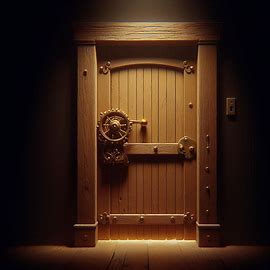

Você encontra uma mansão antiga e abandonada no meio da floresta. Curioso, decide explorar o lugar.
Você entra na mansão e encontra duas escadas: uma para o sótão e outra para o porão.
Você decide sair e voltar para casa, mas sente que algo está te observando.

A sensação de estar sendo seguido nunca o abandona.
No sótão, você encontra uma caixa com um cadeado. Dentro dela, um diário revela que a família que morava ali foi assassinada.
No porão, você encontra um painel de controle com botões e alavancas. Mexer nele faz a porta da mansão se trancar.
Explorando mais no sótão, você começa a ouvir sussurros e sente uma presença estranha. Decide sair correndo.

Ao descer, você percebe que a porta está trancada e que passos podem ser ouvidos no andar de cima. Você está preso.
Você descobre uma passagem secreta no porão, mas algo parece estar te seguindo pelos corredores escuros.
Você explora o porão sem mexer no painel e encontra uma sombra ameaçadora. Decide voltar para o andar de cima rapidamente.
A passagem leva a um túnel escuro que parece interminável. Você sente que está sendo seguido e a tensão aumenta.
Você tenta sair pela janela, mas ela está trancada. A presença ao seu redor parece cada vez mais próxima.
O túnel termina em um espaço escuro e claustrofóbico. Você encontra uma saída, mas a sensação de ser vigiado nunca o abandona.

Você encontra uma forma de sair da mansão e volta para casa, mas a sensação de estar sendo observado persiste.